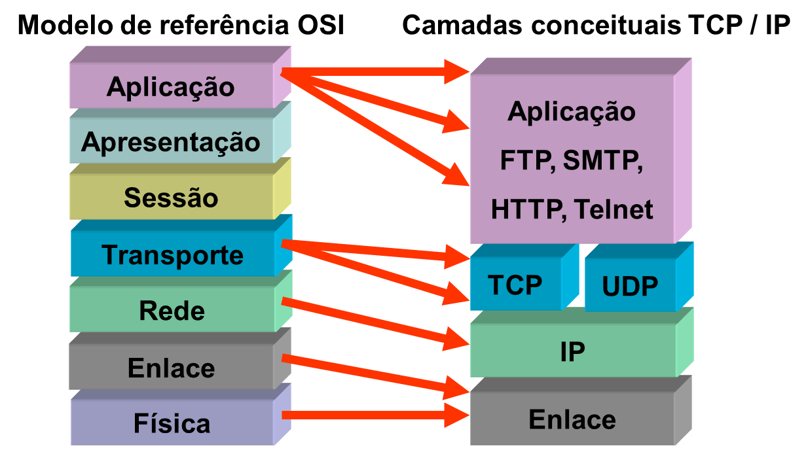
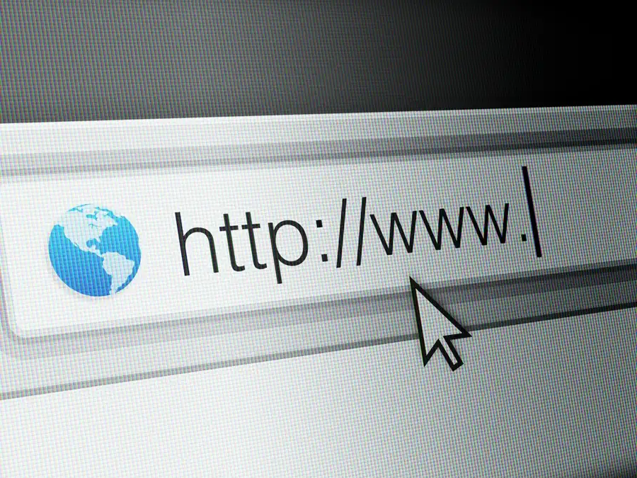
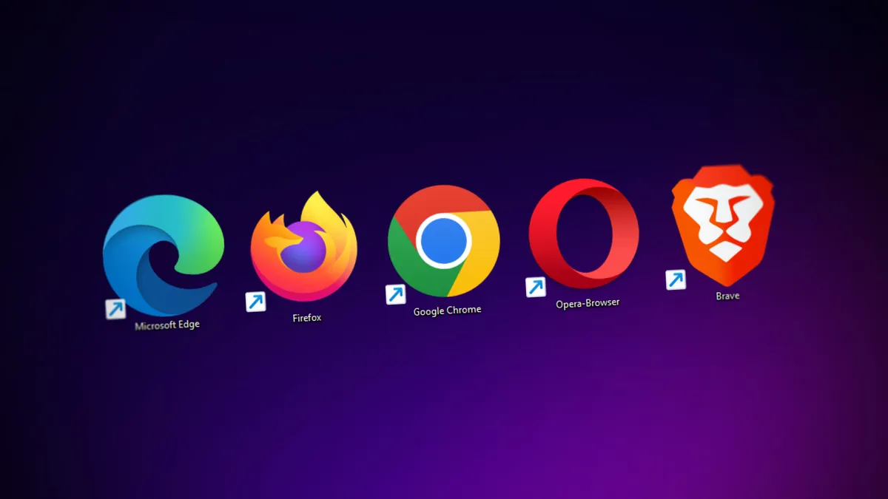
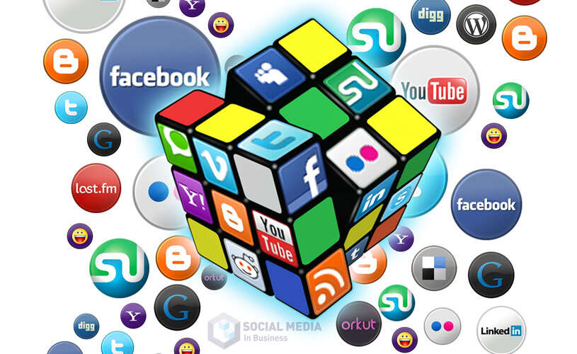

• DÉCADA DE 1960 - A ARPANET [1]
Com o intuito de facilitar a troca de informações, pois temiam ataques dos soviéticos, o Departamento de Defesa dos Estados Unidos (ARPA - Advanced Research Projects Agency) criou um sistema de compartilhamento de informações entre pessoas distantes geograficamente, a fim de facilitar as estratégias de guerra.
Nesse momento, surge o protótipo da primeira rede de internet, a Arpanet (Advanced Research Projects Agency Network).
Assim, no dia 29 de outubro de 1969 foi estabelecida a primeira conexão entre a Universidade da Califórnia e o Instituto de Pesquisa de Stanford. Foi um momento histórico, uma vez que a primeira mensagem foi enviada.

DÉCADA DE 1970 - O protocolo TCP/IP[2]
O protocolo TCP/IP constitui a espinha dorsal da comunicação na internet. Desenvolvido na década de 1970, foi concebido para permitir a transmissão padronizada de dados entre diferentes sistemas, definindo como os dados são enviados e recebidos nas redes. Graças à sua flexibilidade e estrutura clara, o conjunto de protocolos TCP/IP continua sendo essencial para as empresas atualmente, garantindo a transferência de dados sem problemas e a comunicação digital eficiente.

Camadas conceituais TCP/IP">• DÉCADA DE 1980 e 1990 - A criação do WWW [1]
Já na década de 80, o cientista, físico e professor britânico Tim Berners-Lee desenvolveu um navegador ou browser, a World Wide Web (www), a Rede Mundial de Computadores - Internet.
Sua criação é responsável por apresentar ao mundo o modo como utilizamos a internet atualmente. Portanto, apesar de não ter sido o inventor da conexão entre computadores geograficamente distantes (a já citada Arpanet), foi o britânico quem desenvolveu o modelo que acessamos cotidianamente.
A partir disso, a década de 90 ficou conhecida como o "boom da internet", pois foi quando ela se popularizou pelo mundo.
Essa popularização aconteceu com o surgimento de novos

• A GUERRA DOS BROWSERS (ainda década de 1990) [3]
Em 1995, o Navegador Netscape não era a única maneira de ficar online. A gigante de software para computadores Microsoft licenciou o código do antigo Mosaic e criou sua própria janela para a web, o Internet Explorer. O lançamento iniciou uma guerra. A Netscape e a Microsoft trabalharam freneticamente para fazer novas versões de seus programas, cada um tentando superar o concorrente com produtos melhores e mais rápidos.

Clique AQUI para saber mais sobre os browsers
• DÉCADAS DE 2000 E 2010 - As redes sociais [4]
No início dos anos 2000, várias redes sociais importantes surgiram. O Friendster, lançado em 2002, foi um dos primeiros sites a popularizar o conceito de conexões sociais online. Ele permitia que os usuários criassem perfis, adicionarem amigos e compartilharem conteúdo.
O MySpace, lançado em 2003, expandiu ainda mais a popularidade das redes sociais, oferecendo recursos de personalização de perfis e compartilhamento de músicas.
Em 2004, o Facebook foi lançado por Mark Zuckerberg como uma plataforma de rede social exclusiva para estudantes universitários. Com o tempo, o Facebook se expandiu e se tornou a rede social mais popular e influente do mundo, abrangendo todas as faixas etárias e regiões.
Além do Facebook, outras redes sociais notáveis surgiram na mesma época. O LinkedIn, lançado em 2003, concentrou-se no mundo profissional, permitindo que os usuários se conectassem com colegas de trabalho e construíssem redes de contatos profissionais. O Twitter, lançado em 2006, introduziu a ideia de microblogging, permitindo que os usuários compartilhassem atualizações curtas em tempo real.

Fontes: [1] https://pt.wikipedia.org/wiki/Navegador_web; [2] https://pt.wikipedia.org/wiki/Tim_Berners-Lee; [3] https://pt.wikipedia.org/wiki/Guerra_dos_navegadores; [4] https://www.estadao.com.br/link/cultura-digital/a-guerra-dos-navegadores-que-pegou-fogo-nos-anos-90-esta-de-volta-gracas-a-ia-entenda/;